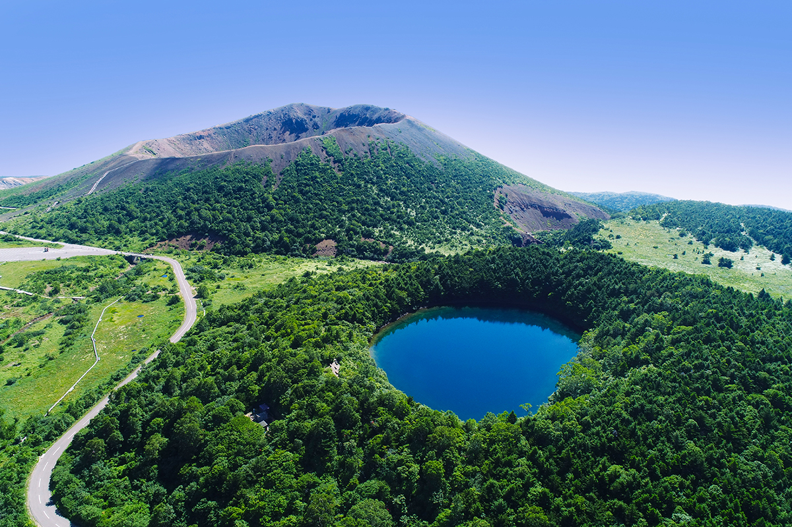

Префектура Фукусима · горы Адзума · дорога
«Бандай-Адзума скайлайн»: горная дорога над вулканами Фукусимы

Первой горной дорогой Японии называют «Бандай-Адзума скайлайн» в префектуре Фукусима. Её средняя высота 1350 метров, и почти на всём пути за окном машины меняются горы, ущелья и необычные скалы.
Дорога
Панорама на высоте 1350 метров
«Бандай-Адзума скайлайн» проложена так, что словно прошивает горную гряду Адзума. Это около 29 км панорамной трассы, и главное в ней масштаб: вдоль пути много смотровых точек с видом на горные хребты, ущелья и скалы причудливой формы.
Дорога идёт высоко, поэтому погода здесь меняется быстро. Зато за каждым поворотом открывается новый вид, и однообразной поездка не бывает.
Сезоны
Звёзды летом, листва осенью
Лучшее время для поездки приходится на лето и осень. Летом над плато Дзёдодайра раскидывается звёздное небо, а таинственно-синее озеро «Глаз ведьмы» особенно красиво. Осенью сюда едут за красной и жёлтой листвой «Сада тэнгу» (тэнгу это горные духи из японских легенд). У каждого сезона на этой дороге свой вид, который не хочется пропустить.
Проезд бесплатный. Дорога открыта примерно с конца апреля до середины ноября, а когда есть риск гололёда, её закрывают с 17:00 до 8:00 утра.
Рядом
Что попробовать и куда заехать
Из местной еды советуют вишню, персики и груши, а также «эмбан-гёдза»: пельмени гёдза, которые выкладывают на сковороде в форме диска. Рядом с дорогой стоит заехать в онсэн Такаю и проехать по дороге «Фруктовая линия».
«Бандай-Адзума скайлайн»
- Даты
- примерно с конца апреля до середины ноября
- Часы работы
- при угрозе гололёда закрыта с 17:00 до 8:00 следующего утра
- Цены / Вход
- бесплатно
- Как добраться
- около 60 минут на машине от развязки Фукусима-Ниси автомагистрали Тохоку
- Телефон
- +81 242-64-3478 (дорожное управление Адзума-Цутию)